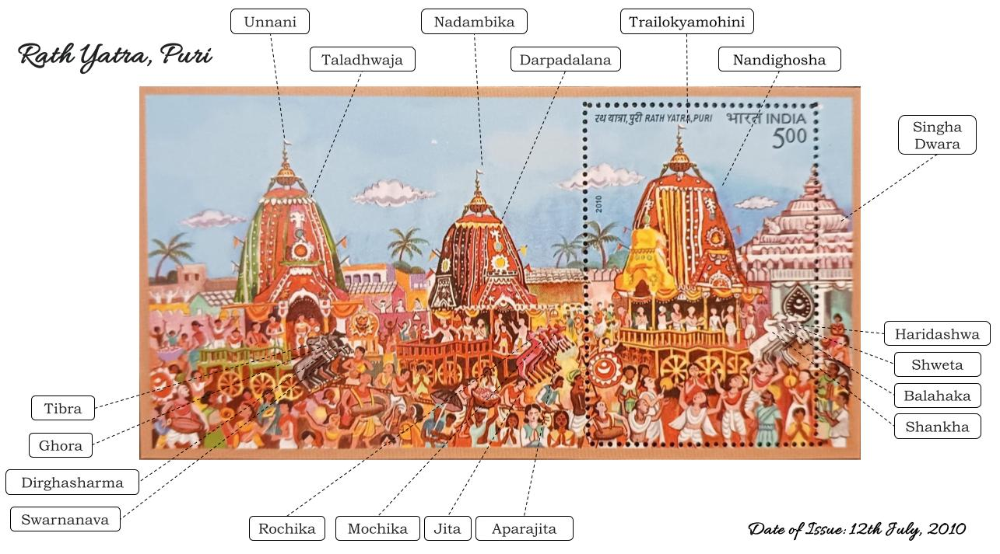
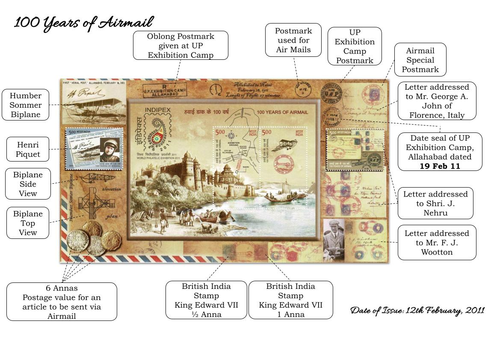
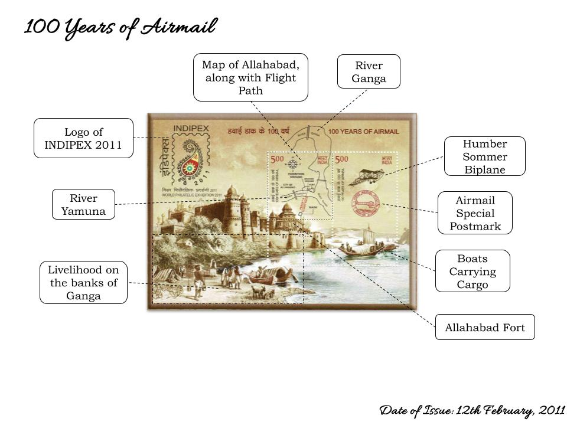
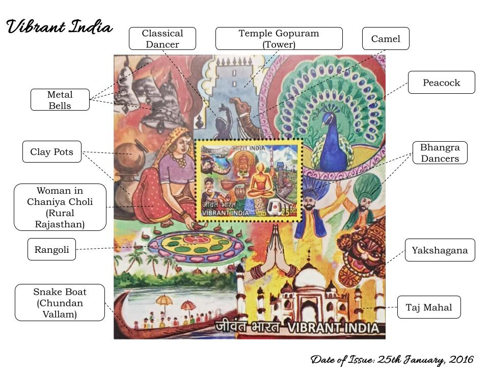
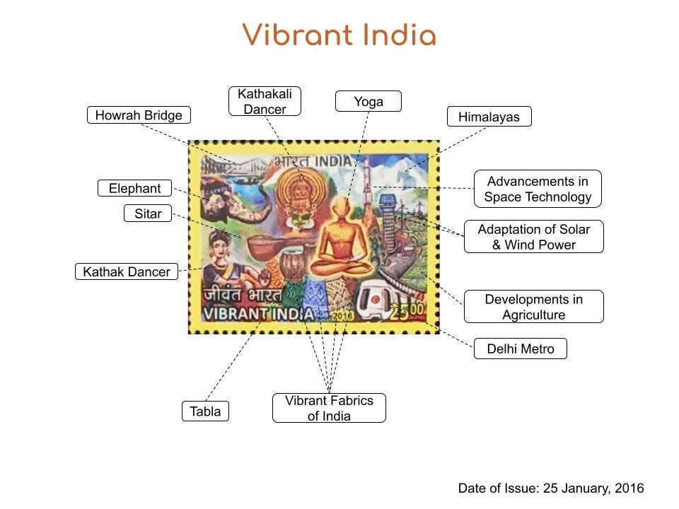
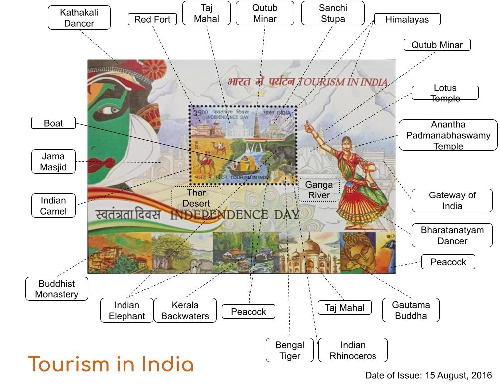
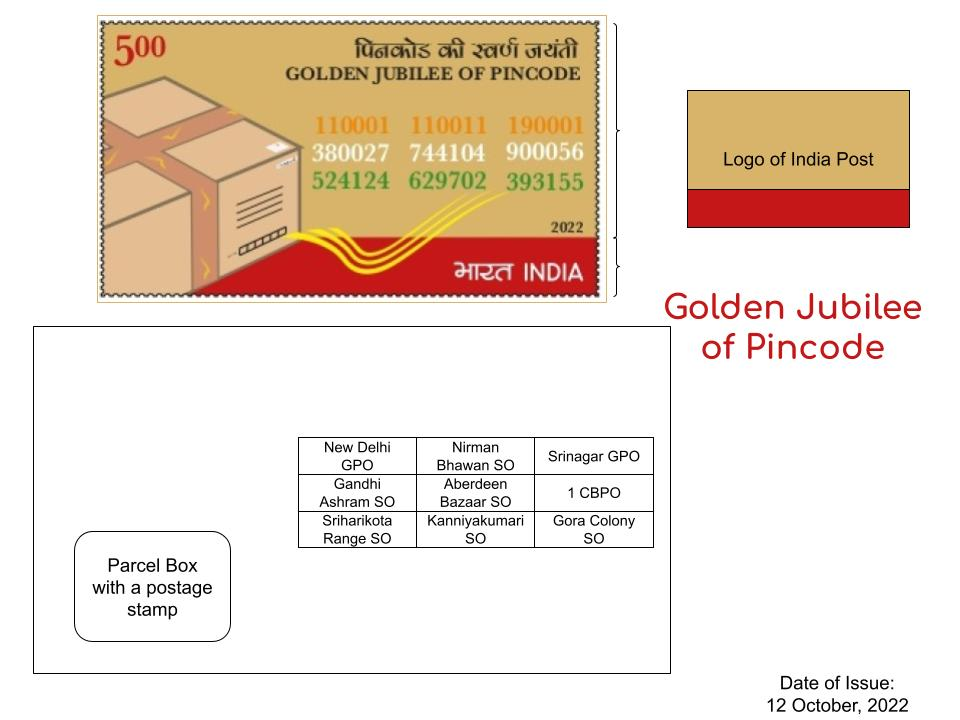
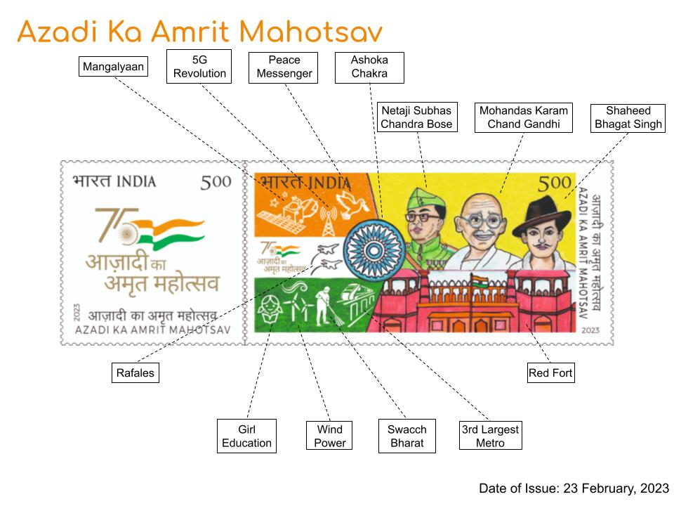
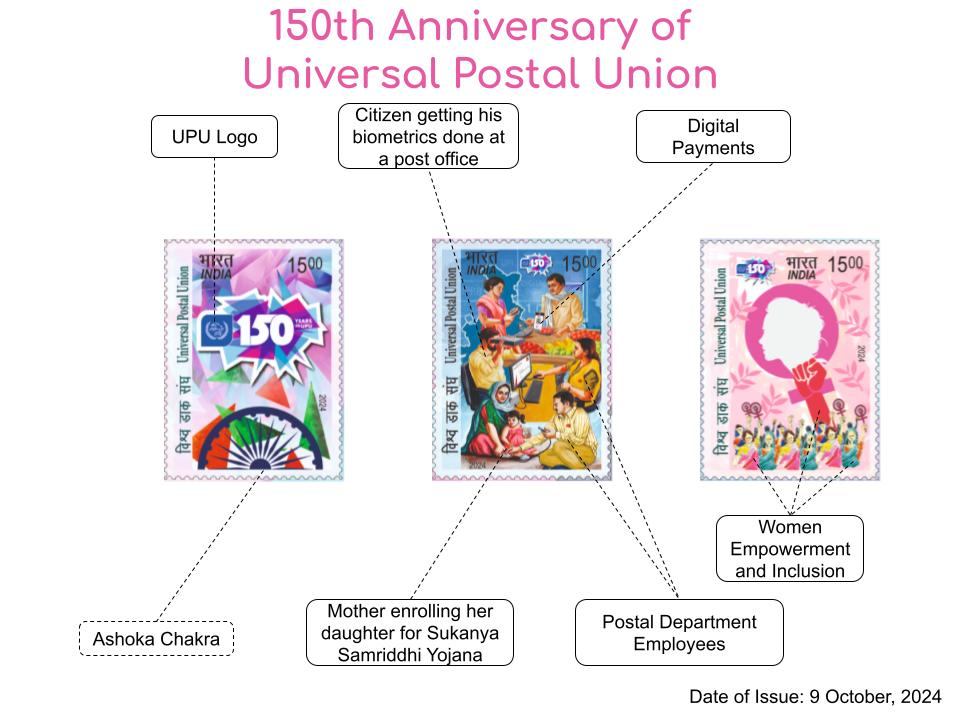
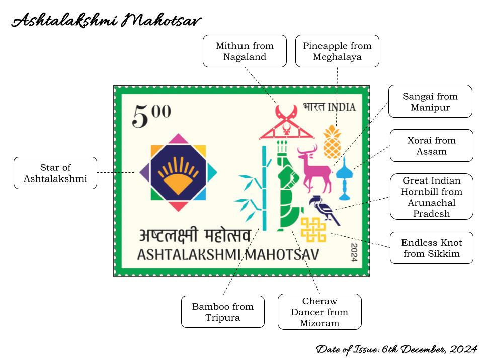

Stamp maps are a philatelic concept where collectors analyze and categorize the exact elements depicted on postage stamps. This involves identifying landmarks, historical events, notable personalities, flora, fauna, cultural symbols, or technological advancements featured on stamps. Rather than just collecting stamps based on themes or issuing countries, stamp mapping focuses on precisely determining the subject matter represented, allowing for a more detailed and structured approach to philatelic research.
Stamp maps offer a fascinating way to explore the connections between postage stamps and pictorial cancellations (PPCs). Many stamps feature buildings, flora, fauna, personalities, and statues that are also represented as PPCs, creating a unique overlap in philately. By studying these connections, collectors can gain a deeper understanding of how different themes are commemorated through both stamps and cancellations. Since designs and artistic interpretations may vary, identifying these links requires careful observation and comparison.
A structured display of these stamps alongside their corresponding PPCs allows for an immersive and educational experience. By visually comparing them, philatelists can better appreciate the historical and thematic significance of these postal elements. Regularly updated collections and curated images help highlight these relationships, making it easier for enthusiasts to explore and document the intersections between stamps and pictorial cancellations in a more engaging way.









